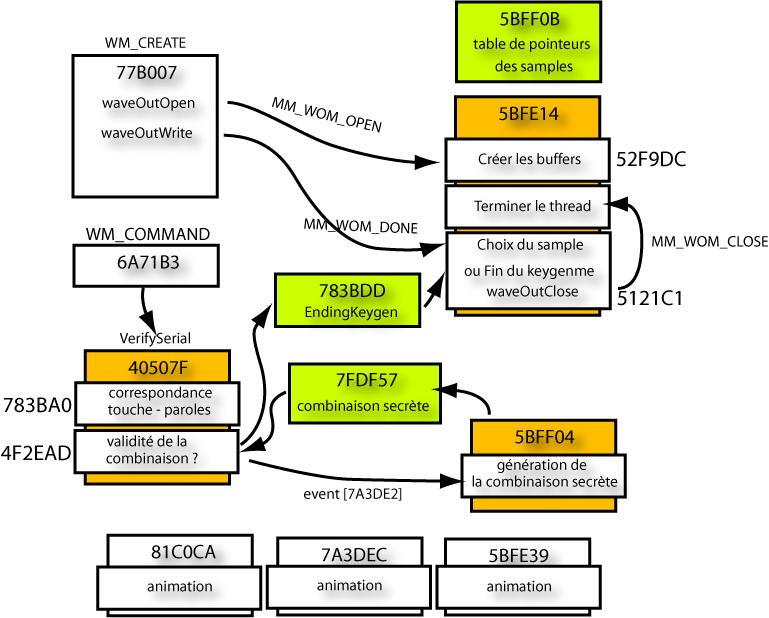
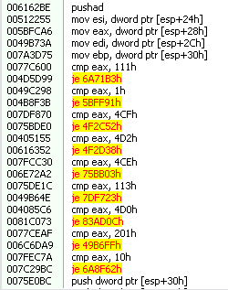
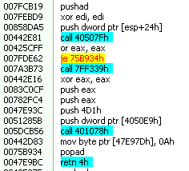
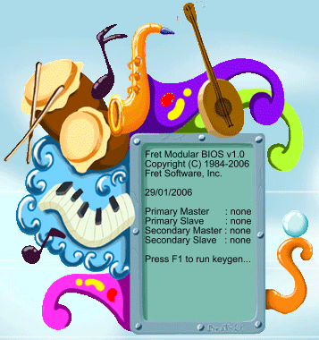

Date de publication : 8 mai 2007 15h15
Auteur : BeatriX
4. Analyse
Cette section va aborder de façon technique l'aperçu général proposé dans l'introduction. De façon plus précise, nous allons répondre aux questions posées dans la section 1.2.
Avant d'observer la bête en pleine activité, nous avons analysé son réveil dans la section précédente.Je m'explique. Comme tout programme qui se respecte, meloquynthe dispose de deux phases d'activité : la phase de réveil (phase d'initialisation) et la phase de travail. voici un aperçu des activités illicites de meloquynthe :
Juste avant d'entrer dans les détails, je vous propose un aperçu général du keygenme avec les routines les plus importantes (orangées) ainsi que les variables vitales (en vert).

4.1. La phase de réveil
Comme je l'ai dit précédemment, cette phase met en place les threads et crée les fenêtres ainsi que leur routine de gestion des contrôles. Pour commencer l'analyse, il faut jeter un oeil du côté de la WinMain qui commence en 0x49B663. Avec le DeObfuscator, on obtient tout le code en clair :
*************************** * * WINMAIN 49B663 * *************************** pushad sub esp, 10h mov ebp, esp push 0h push dword ptr [406D7Ah] push dword ptr [7FE2A3h] push 442C55h push 6162BEh ------------------------------ WinProc call 616C44h ------------------------------ loadBitmap + RegisterClassExA mov dword ptr [ebp-0h], 178h mov dword ptr [ebp+4h], 172h push dword ptr [77B492h] push dword ptr [ebp-0h] call 77EE74h mov dword ptr [ebp+8h], eax push dword ptr [6C6FCAh] push dword ptr [ebp+4h] call 77EE74h mov dword ptr [ebp+0Ch], eax push 0h push dword ptr [7C28C9h] push 0h push 0h push dword ptr [ebp+4h] push dword ptr [ebp-0h] push dword ptr [ebp+0Ch] push dword ptr [ebp+8h] push 80080000h push 4B8EF2h push 442C55h push 0h call CreateWindowExA ----------------------- création de la fenêtre mov dword ptr [77AD76h], eax push 1h push dword ptr [77AD76h] call ShowWindow push dword ptr [77AD76h] call UpdateWindow call 7FEBF8h ------------------- Winloop avec GetMessageA - DispatchMessage - Translate mov esp, ebp add esp, 10h mov dword ptr [esp+1Ch], eax popad ret
Enfin ! nous y sommes. C'est cette partie de l'analyse qui est la plus ardue puisqu'elle nécessite une analyse presque complète du code. Il faut donc déterminer le rôle tenu par chaque routine, chaque sous-routine puis repérer leurs relations les unes par rapport aux autres.
J'ai donc commencé par désassembler la WinProc située en 6162BE. Voici un aperçu de ce que j'ai pu obtenir avec le DeObfuscator :

On voit qu'en 0x49C298 (cmp eax, 1h), on a un test du message WM_CREATE. La routine qui se charge d'initialiser la totalité du crackme commence donc en 0x5BFF91 (elle aboutit à la routine importante 77B007). Le programme va créer 5 threads (5BFE14, 5BFE39, 81C0CA, 7A3DEC et 5BFF04), va initialiser le waveform-audio à l'aide de waveoutOpen. Cette initialisation va avoir pour effet d'envoyer un message MM_WOM_OPEN (0x3BB) au premier thread qui va se charger de créer deux buffers de stockage des morceaux à jouer. La WinProc va alors préparer les deux buffers à l'aide de la fonction waveOutPrepareHeader et va les faire jouer à l'aide de waveOutWrite. Ceci aura pour effet d'envoyer un message MM_WOM_DONE (0x3BD) au premier thread qui se chargera alors de remplir les buffers avec les bonnes valeurs pour continuer le morceau. Les séquences sont choisies aléatoirement.
********************************** * * 77B007 * ********************************** pushad cmp byte ptr [858D09h], 1h (cette routine a-t-elle été exécutée déjà ?) je 77B1BCh xor edi, edi mov eax, dword ptr [esp+24h] mov dword ptr [4050E9h], eax push 858E1Dh call InitializeCriticalSection push edi call GetModuleHandleA mov dword ptr [7A3C00h], eax push 6E71F6h push edi push edi push 5BFE14h push edi push edi call CreateThread ------------- thread de gestion de la musique push edi push 0h push 0h push edi call CreateEventA mov dword ptr [49B5EFh], eax push 20000h push edi push dword ptr [6E71F6h] push 8590B1h push 0FFh push 77EEB9h call waveoutOpen ------------- ouvrir le device cmp eax, 0h je 75E0D0h push 10h push 7FE2CEh push 83AD4Fh push 0h call MessageBoxA push 0h call ExitProcess push 0FFh push dword ptr [49B5EFh] call WaitForSingleObject --- Attente de la fin d'initialisation du thread 5BFE14 push 20h push 7FE173h push dword ptr [77EEB9h] call waveOutPrepareHeader push 20h push 5302E8h push dword ptr [77EEB9h] call waveOutPrepareHeader push 20h push 7FE173h push dword ptr [77EEB9h] call waveoutWrite push 20h push 5302E8h push dword ptr [77EEB9h] call waveoutWrite [...] ---------------------------------------- Création des autres threads et des events
La phase d'initialisation est complète lorsque le thread de gestion de la musique a répondu au message MM_WOM_OPEN :
*************************** * * 52F9DC * *************************** xor eax, eax mov dword ptr [77ADB5h], eax mov dword ptr [7FDF57h], eax ---------- mise à zéro de la combinaison secrète mov dword ptr [784D7Dh], eax mov byte ptr [77B7E8h], al mov byte ptr [783BDDh], al ---------- mise à zéro du EndingKeygen mov byte ptr [77B17Ch], al mov byte ptr [5BFFC4h], al mov byte ptr [7A3CACh], al mov byte ptr [782EEEh], al push 4h push 1000h push 1CB60h push 0h call VirtualAlloc --------------------------------------- Allocation du 1er buffer mov dword ptr [858F36h], eax push 4h push 1000h push 1CB60h push 0h call VirtualAlloc --------------------------------------- Allocation du 2nd buffer mov dword ptr [405096h], eax push dword ptr [858F36h] push 7FE173h call 6343FCh push dword ptr [405096h] push 5302E8h call 6343FCh push 1CB60h push dword ptr [5BFF2Bh] push 7FE173h call 442E8Ch push 1CB60h push dword ptr [5BFF3Fh] push 5302E8h call 442E8Ch push dword ptr [49B5EFh] call SetEvent -------------------- rendre la main à la WinMain
4.2. Gestion de la saisie des touches
En fouillant un peu du côté de WM_COMMAND dans la WinProc (cmp eax, 111h), c'est-à-dire en 6A71B3, on tombe rapidement sur cette routine ci :

Le saut conditionnel que vous voyez est notre test de validité du serial ! La routine en 40507Fh est donc la routine de vérification. J'ai résumé l'analyse comme ceci :
; ======================================= ; WinProc 6162BE ; ======================================= .if uMsg == WM_COMMAND ; <---- cmp eax, 111h .if wParam == ID_button1 ; <---- cmp edi, 1FBh mov eax, 536h .elseif wParam == ID_Button2 ; <---- cmp edi, 1FCh mov eax, 535h .elseif wParam == ID_Button3 ; <---- cmp edi, 1FDh mov eax, 534h .elseif wParam == ID_Button4 ; <---- cmp edi, 1FEh mov eax, 533h .elseif wParam == ID_Button5 ; <---- cmp edi, 1FFh mov eax, 532h .endif push eax call Verify_Serial ; <----- 40507Fh .if eax!=0 mov EndingKeygen, 1 ; (en 7FF339, nous avons mov byte ptr [783BDDh], 1h) call SendMessageA (4D1h) .endif .elseif uMsg == WM_CREATE ; <---- cmp eax, 1h .elseif uMsg == WM_TIMER ; <---- cmp eax, 113h .elseif uMsg == WM_USER+CEh ; <---- cmp eax, 4CEh .elseif uMsg == WM_USER+CFh ; <---- cmp eax, 4CFh .elseif uMsg == WM_USER+D0h ; <---- cmp eax, 4D0h .elseif uMsg == WM_USER+D2h ; <---- cmp eax, 4D2h .endif
On constate donc que si l'un des boutons est activé, eax est affecté d'une valeur précise (0x536, 0x535, 0x534, 0x533 ou 0x532). Cette valeur est transmise à une routine (40507F) qui est chargée de vérifier la combinaison en cours de saisie. Si la combinaison est bien saisie, la routine renvoie 1 et le byte EndingKeygen est armé. Nous allons voir que ce byte sera récupéré par l'un des threads qui s'occupera de conclure. Le SendMessageA qui suit reste un mystère. Le message envoyé n'est pas traité par la WinProc et donc ne sert à rien. Il s'agit sans doute de détourner l'attention du reverser pour amoindrir l'importance du byte EndingKeygen.
Comme je viens de le dire, un thread teste la valeur de EndingKeygen en permanence. En fait, il s'agit toujours du premier thread (5BFE14) qui, lorsqu'il reçoit le message MM_WOM_DONE (0x3BD), fait le test suivant :
*************************** * * 7A3B7E * *************************** push 858E1Dh call EnterCriticalSection cmp byte ptr [783BDDh], 0h EndingKeygen == 0 ? je 784DA0h call 54CEDBh or eax, eax jne 6C6DDCh ----------------------- libérer toutes les mémoires et envoyer 4CF à la winproc push 858E1Dh call LeaveCriticalSection
Si le byte situé en 783BDDh vaut 1, alors le thread va libérer toutes les mémoires, va jouer une succession de morceaux plus rapidement et va envoyer le message 0x4CF à la Winproc. Cette dernière prendra le relai pour modifier une dernière fois la fenêtre pour faire un petit effet d'animation.
4.3 Gestion du contrôle de la validité de la combinaison
Nous nous intéressons maintenant à la routine VerifySerial qui démarre en 0x40507F. Je vais vous présenter le fonctionnement théorique de la vérification en vous donnant suffisamment d'informations techniques pour que vous puissiez vérifier par vous même. Son fonctionnement est assez simple dans son principe. Le dword situé en 0x7FDF57 est la clé de l'énigme. Cette valeur est utilisée pour tester la validité de la séquence de touches proposée par l'utilisateur. Je rappelle qu'il faut actionner 5 fois les touches du petit clavier dans un certain ordre en respectant les paroles de la petite mélodie.
Plus précisément, ce dword est un ensemble de 32 bits répartis comme ceci :
- 1er groupe (5 bits) : Ces 5 bits spécifient la touche à actionner en premier
- 2ème groupe (5bits) : Ces 5 bits spécifient la seconde touche à actionner
- 3ème groupe (5bits) : Ces 5 bits spécifient la troisième touche à actionner
- 4ème groupe (5bits) : Ces 5 bits spécifient la quatrième touche à actionner
- 5ème groupe (5bits) : Ces 5 bits spécifient la cinquième et dernière touche à actionner
- 6ème groupe (7bits) : Ces 7 bits mémorisent l'état d'avancement de la saisie de la combinaison
Comme vous pouvez le constater, le dword situé en 0x7FDF57 stocke carrément la séquence de touches à activer. Il permet aussi au meloquynthe de savoir où en est l'utilisateur de la saisie de la combinaison en testant les 7 bits de poids faible.
Prenons un exemple concret. Imaginons que le dword situé en 0x7FDF57 soit égal à 0x10A04800. En binaire, cette valeur est égale à 00010 10000 10000 00010 01000 0000000. Vous voyez apparaître les 6 groupes de bits évoqués précédemment.
Lorsque l'utilisateur appuie sur un bouton, meloquynthe consulte les 7 bits de poids faible 0000000.Cette valeur nulle indique au meloquynthe que c'est la première saisie de l'utilisateur qui doit être comparée à la première touche de la combinaison. Pour cela, meloquynthe consulte alors les 5 premiers bits 00010 et les balaie de gauche à droite. Le bit armé de ce premier groupe est le bit3, ceci permet au meloquynthe de réaliser le calcul suivant : 0x532 + 3 = 0x535. Cette valeur sera comparée à la valeur passée en paramètre à la routine de vérification. En cas d'égalité, meloquynthe affecte la valeur 1000000 aux 7 bits de vérification.
A nouveau, lorsque l'utilisateur appuie sur un bouton, meloquynthe consulte les 7 bits de poids faible 1000000. Cette valeur indique au meloquynthe que c'est la seconde saisie de l'utilisateur qui doit être comparée à la seconde touche de la combinaison. Pour cela, meloquynthe consulte alors le second groupe de 5 bits 10000 et les balaie de gauche à droite. Le bit armé de ce second groupe est le bit0, ceci permet au meloquynthe de réaliser le calcul suivant : 0x532 + 0 = 0x532. Cette valeur sera comparée à la valeur passée en paramètre à la routine de vérification. En cas d'égalité, meloquynthe affecte la valeur 1100000 aux 7 bits de vérification.
A nouveau, lorsque l'utilisateur appuie sur un bouton, meloquynthe consulte les 7 bits de poids faible 1100000. Cette valeur indique au meloquynthe que c'est la troisième saisie de l'utilisateur qui doit être comparée à la troisième touche de la combinaison. Pour cela, meloquynthe consulte alors le troisième groupe de 5 bits 10000 et les balaie de gauche à droite. Le bit armé de ce troisième groupe est le bit0, ceci permet au meloquynthe de réaliser le calcul suivant : 0x532 + 0 = 0x532. Cette valeur sera comparée à la valeur passée en paramètre à la routine de vérification. En cas d'égalité, meloquynthe affecte la valeur 1110000 aux 7 bits de vérification.
A nouveau, lorsque l'utilisateur appuie sur un bouton, meloquynthe consulte les 7 bits de poids faible 1110000. Cette valeur indique au meloquynthe que c'est la quatrième saisie de l'utilisateur qui doit être comparée à la quatrième touche de la combinaison. Pour cela, meloquynthe consulte alors le quatrième groupe de 5 bits 00010 et les balaie de gauche à droite. Le bit armé de ce quatrième groupe est le bit3, ceci permet au meloquynthe de réaliser le calcul suivant : 0x532 + 3 = 0x535. Cette valeur sera comparée à la valeur passée en paramètre à la routine de vérification. En cas d'égalité, meloquynthe affecte la valeur 1111000 aux 7 bits de vérification.
A nouveau, lorsque l'utilisateur appuie sur un bouton, meloquynthe consulte les 7 bits de poids faible 1111000. Cette valeur indique au meloquynthe que c'est la dernière saisie de l'utilisateur qui doit être comparée à la cinquième touche de la combinaison. Pour cela, meloquynthe consulte alors le cinquième groupe de 5 bits 01000 et les balaie de gauche à droite. Le bit armé de ce cinquième groupe est le bit1, ceci permet au meloquynthe de réaliser le calcul suivant : 0x532 + 1 = 0x533. Cette valeur sera comparée à la valeur passée en paramètre à la routine de vérification. En cas d'égalité, la routine VerifySerial renvoie 1 ce qui permettra de conclure.
En résumé, la protection de ce binaire est très faible puisqu'elle ne repose que sur la simple connaissance d'un dword situé à une adresse fixe ! Si nous connaissons ce dword, nous avons vaincu le binaire. Ce qui pose problème ici est le multi-threading et l'obfuscation, c'est-à-dire la phase d'analyse.
Voici quelques routines choisies qui précisent ce que je viens d'expliquer :
***************************** * * 4F2EAD (comparaison des indices) * **************************** add ecx, 532h ----------- ajoute 532h cmp ecx, ebp je 858E7Dh -------------- compare l'indice calculé avec celui de la combinaison call 4D5D75h ------------ armer un event pour générer une autre combinaison secrète xor eax, eax push eax push 858E1Dh call LeaveCriticalSection xor eax, eax mov dword ptr [edi+20h], eax pop eax mov dword ptr [esp+1Ch], eax popad retn 4h
On voit également le test pour vérifier si l'utilisateur à effectué 5 saisies correctes :
***************************** * * 858E7D * **************************** mov al, 40h mov ecx, esi ror al, cl or dword ptr [7FDF57h], eax cmp esi, 4h jnc 77C5F1h ---------------- teste si on a effectué 5 saisies xor eax, eax push eax push 858E1Dh call LeaveCriticalSection xor eax, eax mov dword ptr [edi+20h], eax pop eax mov dword ptr [esp+1Ch], eax popad retn 4h ***************************** * * 77C5F1 (5 saisies correctes) * **************************** xor eax, eax inc eax ------------------------- renvoyer 1 pour préciser le succés. push eax push 858E1Dh call LeaveCriticalSection xor eax, eax mov dword ptr [edi+20h], eax pop eax mov dword ptr [esp+1Ch], eax popad retn 4h
4.4 Génération du dword clé.
Comme je l'ai dit dans le paragraphe précédent, la solution de ce keygenme ne repose que sur la connaissance d'un dword situé en 0x7FDF57. Voyons de plus près comment le meloquynthe gère son contenu.
Pour commencer, c'est le thread 0x5BFF04 qui est responsable de cette génération. Voici le début de la routine :
pushad xor edi, edi push 0FFh push dword ptr [7A3DE2h] call WaitForSingleObject --------- Attendre une demande de génération d'une nouvelle combinaison cmp byte ptr [77B17Ch], 0h je 7FDF3Ch push dword ptr [7FDE7Ch] call SetEvent popad xor eax, eax push eax call ExitThread
Voici la routine qui va générer à proprement parler la combinaison :
***************************** * * 7FDF3C * ***************************** ; Génération du seed push 100h call 783BFBh ------- calculer un dword à partir de la musique en cours mov edi, eax push 1h call Sleep ror edi, 10h push 100h call 783BFBh ------- calculer un dword à partir de la musique en cours or edi, eax mov eax, edi rol eax, 2h xor edi, eax push 1h call 783BFBh ------- calculer un dword à partir de la musique en cours mov cl, al ror edi, cl xor ebp, ebp ------------ ebp <- 0 xor edx, edx mov dl, 5h ------------ edx <- 5 (5 combinaisons) loop: rol edi, 6h mov ecx, edi ------------ récupère seed and ecx, 00111111b xor ebx, ebx inc bl ------------ ebx <- 1 ror bl, cl test bl, 11100000b je @F (7C2A31h) rol bl, 4h @@: and ebx, 00011111b or ebp, ebx ror ebp, 5h ------------- décale ebp de 5 bits à droite dec edx jne loop (7FEBAEh) and ebp, 0FFFFFF80h mov dword ptr [7FDF57h], ebp <---- initialisation de la combinaison secrète xor eax, eax mov byte ptr [782EEEh], al <---- mise à zéro
4.5 Gestion de la correspondance touche-paroles.
Comme je l'ai annoncé dans l'introduction, les touches du clavier ne répondent qu'à certains instants précis définis par les morceaux en cours de lecture. Nous allons voir avec précision comment cela fonctionne.
Pour commencer, c'est la routine de vérification de la combinaison située en 0x40507F qui se charge de cette vérification. Voici plus précisément la routine importante :
***************************** * * 783BA0 * **************************** mov eax, dword ptr [edi+20h] push eax call 6E5294h -------------------- calcule l'indice à partir du sample qui est joué cmp eax, dword ptr [esp+24h] je 7843A9h --------------------------- vérifie qu'il est en accord avec la touche activée call 4D5D75h xor eax, eax push eax push 858E1Dh call leaveCriticalSection xor eax, eax mov dword ptr [edi+20h], eax pop eax mov dword ptr [esp+1Ch], eax popad retn 4h
4.6 Algorithme pour le keygen.
Le keygen doit donc ne faire qu'une seule chose : récupérer la combinaison secrète de 4 bytes située en 0x7FDF57 et recalculer les 5 indices qui nous permettent de remonter aux touches à activer. Je me suis amusé un peu et j'ai réalisé un keygen "skiné" dont voici un aperçu :

Je vous propose le keygen avec les sources ICI.
Copyright (C)- FRET (2007)